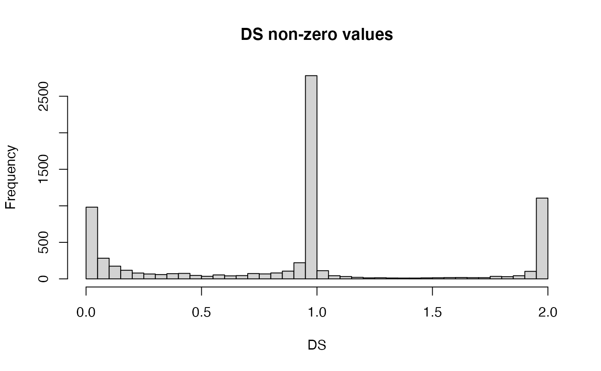
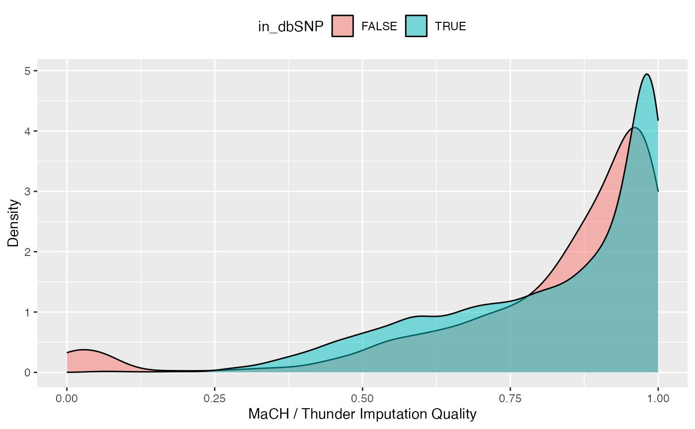

1. Introduction to VariantAnnotation
Valerie Obenchain
July 18, 2026
VariantAnnotation.RmdIntroduction
This vignette outlines a work flow for annotating and filtering genetic variants using the VariantAnnotation package. Sample data are in VariantCall Format (VCF) and are a subset of chromosome 22 from 1000 Genomes. VCF text files contain meta-information lines, a header line with column names, data lines with information about a position in the genome, and optional genotype information on samples for each position. Samtools organisation and repositories describes the VCF format in detail.
Data are read in from a VCF file and variants identified according to region such as coding, intron, intergenic, spliceSite etc. Amino acid coding changes are computed for the non-synonymous variants and SIFT and PolyPhen databases provide predictions of how severly the coding changes affect protein function.
Variant Call Format (VCF) files
Data import and exploration
Data are parsed into a VCF object with readVcf.
library(VariantAnnotation)## Warning: package 'BiocGenerics' was built under R version 4.6.1## Warning: package 'GenomicRanges' was built under R version 4.6.1## Warning: package 'Biostrings' was built under R version 4.6.1
fl <- system.file("extdata", "chr22.vcf.gz", package="VariantAnnotation")
vcf <- readVcf(fl, "hg19")
vcf## class: CollapsedVCF
## dim: 10376 5
## rowRanges(vcf):
## GRanges with 5 metadata columns: paramRangeID, REF, ALT, QUAL, FILTER
## info(vcf):
## DataFrame with 22 columns: LDAF, AVGPOST, RSQ, ERATE, THETA, CIEND, CIPOS,...
## info(header(vcf)):
## Number Type Description
## LDAF 1 Float MLE Allele Frequency Accounting for LD
## AVGPOST 1 Float Average posterior probability from MaCH/Thunder
## RSQ 1 Float Genotype imputation quality from MaCH/Thunder
## ERATE 1 Float Per-marker Mutation rate from MaCH/Thunder
## THETA 1 Float Per-marker Transition rate from MaCH/Thunder
## CIEND 2 Integer Confidence interval around END for imprecise var...
## CIPOS 2 Integer Confidence interval around POS for imprecise var...
## END 1 Integer End position of the variant described in this re...
## HOMLEN . Integer Length of base pair identical micro-homology at ...
## HOMSEQ . String Sequence of base pair identical micro-homology a...
## SVLEN 1 Integer Difference in length between REF and ALT alleles
## SVTYPE 1 String Type of structural variant
## AC . Integer Alternate Allele Count
## AN 1 Integer Total Allele Count
## AA 1 String Ancestral Allele, ftp://ftp.1000genomes.ebi.ac.u...
## AF 1 Float Global Allele Frequency based on AC/AN
## AMR_AF 1 Float Allele Frequency for samples from AMR based on A...
## ASN_AF 1 Float Allele Frequency for samples from ASN based on A...
## AFR_AF 1 Float Allele Frequency for samples from AFR based on A...
## EUR_AF 1 Float Allele Frequency for samples from EUR based on A...
## VT 1 String indicates what type of variant the line represents
## SNPSOURCE . String indicates if a snp was called when analysing the...
## geno(vcf):
## List of length 3: GT, DS, GL
## geno(header(vcf)):
## Number Type Description
## GT 1 String Genotype
## DS 1 Float Genotype dosage from MaCH/Thunder
## GL G Float Genotype LikelihoodsHeader information
Header information can be extracted from the VCF with header(). We see there are 5 samples, 1 piece of meta information, 22 info fields and 3 geno fields.
header(vcf)## class: VCFHeader
## samples(5): HG00096 HG00097 HG00099 HG00100 HG00101
## meta(1): fileformat
## fixed(2): FILTER ALT
## info(22): LDAF AVGPOST ... VT SNPSOURCE
## geno(3): GT DS GLData can be further extracted using the named accessors.
## [1] "HG00096" "HG00097" "HG00099" "HG00100" "HG00101"## DataFrame with 3 rows and 3 columns
## Number Type Description
## <character> <character> <character>
## GT 1 String Genotype
## DS 1 Float Genotype dosage from..
## GL G Float Genotype LikelihoodsGenomic positions
rowRanges contains information from the CHROM, POS, and ID fields of the VCF file, represented as a GRanges. The paramRangeID column is meaningful when reading subsets of data and is discussed further below.
head(rowRanges(vcf), 3)## GRanges object with 3 ranges and 5 metadata columns:
## seqnames ranges strand | paramRangeID REF
## <Rle> <IRanges> <Rle> | <factor> <DNAStringSet>
## rs7410291 22 50300078 * | NA A
## rs147922003 22 50300086 * | NA C
## rs114143073 22 50300101 * | NA G
## ALT QUAL FILTER
## <DNAStringSetList> <numeric> <character>
## rs7410291 G 100 PASS
## rs147922003 T 100 PASS
## rs114143073 A 100 PASS
## -------
## seqinfo: 1 sequence from hg19 genome; no seqlengthsIndividual fields can be pulled out with named accessors. Here we see REF is stored as a DNAStringSet and qual is a numeric vector.
ref(vcf)[1:5]## DNAStringSet object of length 5:
## width seq
## [1] 1 A
## [2] 1 C
## [3] 1 G
## [4] 1 C
## [5] 1 C
qual(vcf)[1:5]## [1] 100 100 100 100 100ALT is a DNAStringSetList (allows for multiple alternate alleles per variant) or a DNAStringSet. When structural variants are present it will be a CharacterList.
alt(vcf)[1:5]## DNAStringSetList of length 5
## [[1]] G
## [[2]] T
## [[3]] A
## [[4]] T
## [[5]] TGenotype data
Genotype data described in the FORMAT fields are parsed into the geno slot. The data are unique to each sample and each sample may have multiple values variable. Because of this, the data are parsed into matrices or arrays where the rows represent the variants and the columns the samples. Multidimentional arrays indicate multiple values per sample. In this file all variables are matrices.
geno(vcf)## List of length 3
## names(3): GT DS GL## GT DS GL
## [1,] "matrix" "matrix" "matrix"
## [2,] "array" "array" "array"Let’s take a closer look at the genotype dosage (DS) variable. The header provides the variable definition and type.
## DataFrame with 1 row and 3 columns
## Number Type Description
## <character> <character> <character>
## DS 1 Float Genotype dosage from..These data are stored as a 10376 x 5 matrix. Each of the five samples (columns) has a single value per variant location (row).
## [1] 10376 5
DS[1:3,]## HG00096 HG00097 HG00099 HG00100 HG00101
## rs7410291 0 0 1 0 0
## rs147922003 0 0 0 0 0
## rs114143073 0 0 0 0 0DS is also known as ‘posterior mean genotypes’ and range in value from [0, 2]. To get a sense of variable distribution, we compute a five number summary of the minimum, lower-hinge (first quartile), median, upper-hinge (third quartile) and maximum.
fivenum(DS)## [1] 0 0 0 0 2The majority of these values (86%) are zero.
## [1] 0.8621627View the distribution of the non-zero values.

Info data
In contrast to the genotype data, the info data are unique to the variant and the same across samples. All info variables are represented in a single DataFrame.
info(vcf)[1:4, 1:5]## DataFrame with 4 rows and 5 columns
## LDAF AVGPOST RSQ ERATE THETA
## <numeric> <numeric> <numeric> <numeric> <numeric>
## rs7410291 0.3431 0.9890 0.9856 2e-03 0.0005
## rs147922003 0.0091 0.9963 0.8398 5e-04 0.0011
## rs114143073 0.0098 0.9891 0.5919 7e-04 0.0008
## rs141778433 0.0062 0.9950 0.6756 9e-04 0.0003We will use the info data to compare quality measures between novel (i.e., not in dbSNP) and known (i.e., in dbSNP) variants and the variant type present in the file. Variants with membership in dbSNP can be identified by using the appropriate SNPlocs package for the hg19 genome (GRCh37).
library(SNPlocs.Hsapiens.dbSNP144.GRCh37)
vcf_rsids <- names(rowRanges(vcf))
chr22snps <- snpsBySeqname(SNPlocs.Hsapiens.dbSNP144.GRCh37, "22")
chr22_rsids <- mcols(chr22snps)$RefSNP_id
in_dbSNP <- vcf_rsids %in% chr22_rsids
table(in_dbSNP) ## in_dbSNP
## FALSE TRUE
## 1114 9262Info variables of interest are ‘VT’, ‘LDAF’ and ‘RSQ’. The header offers more details on these variables.
## DataFrame with 3 rows and 3 columns
## Number Type Description
## <character> <character> <character>
## VT 1 String indicates what type ..
## LDAF 1 Float MLE Allele Frequency..
## RSQ 1 Float Genotype imputation ..Create a data frame of quality measures of interest …
metrics <- data.frame(QUAL=qual(vcf), in_dbSNP=in_dbSNP,
VT=info(vcf)$VT, LDAF=info(vcf)$LDAF, RSQ=info(vcf)$RSQ)and visualize the distribution of qualities using ggplot2. For instance, genotype imputation quality is higher for the known variants in dbSNP.
library(ggplot2)
ggplot(metrics, aes(x=RSQ, fill=in_dbSNP)) +
geom_density(alpha=0.5) +
scale_x_continuous(name="MaCH / Thunder Imputation Quality") +
scale_y_continuous(name="Density") +
theme(legend.position="top")
Import data subsets
When working with large VCF files it may be more efficient to read in subsets of the data. This can be accomplished by selecting genomic coordinates (ranges) or by specific fields from the VCF file.
Select genomic coordinates
To read in a portion of chromosome 22, create a GRanges with the regions of interest.
rng <- GRanges(seqnames="22", ranges=IRanges(
start=c(50301422, 50989541),
end=c(50312106, 51001328),
names=c("gene_79087", "gene_644186")))When ranges are specified, the VCF file must have an accompanying Tabix index file. See indexTabix for help creating an index.
The paramRangesID column distinguishes which records came from which param range.
head(rowRanges(vcf_rng), 3)## GRanges object with 3 ranges and 5 metadata columns:
## seqnames ranges strand | paramRangeID REF
## <Rle> <IRanges> <Rle> | <factor> <DNAStringSet>
## rs114335781 22 50301422 * | gene_79087 G
## rs8135963 22 50301476 * | gene_79087 T
## 22:50301488_C/T 22 50301488 * | gene_79087 C
## ALT QUAL FILTER
## <DNAStringSetList> <numeric> <character>
## rs114335781 A 100 PASS
## rs8135963 C 100 PASS
## 22:50301488_C/T T 100 PASS
## -------
## seqinfo: 1 sequence from hg19 genome; no seqlengthsSelect VCF fields
Data import can also be defined by the fixed, info and geno fields. Fields available for import are described in the header information. To view the header before reading in the data, use ScanVcfHeader.
hdr <- scanVcfHeader(fl)
## e.g., INFO and GENO fields
head(info(hdr), 3)## DataFrame with 3 rows and 3 columns
## Number Type Description
## <character> <character> <character>
## LDAF 1 Float MLE Allele Frequency..
## AVGPOST 1 Float Average posterior pr..
## RSQ 1 Float Genotype imputation ..## DataFrame with 3 rows and 3 columns
## Number Type Description
## <character> <character> <character>
## GT 1 String Genotype
## DS 1 Float Genotype dosage from..
## GL G Float Genotype LikelihoodsTo subset on “LDAF” and “GT” we specify them as character vectors in the info and geno arguments to ScanVcfParam. This creates a ScanVcfParam object which is used as the param argument to readVcf.
## Return all 'fixed' fields, "LAF" from 'info' and "GT" from 'geno'
svp <- ScanVcfParam(info="LDAF", geno="GT")
vcf1 <- readVcf(fl, "hg19", svp)
names(geno(vcf1))## [1] "GT"To subset on both genomic coordinates and fields the ScanVcfParam object must contain both.
svp_all <- ScanVcfParam(info="LDAF", geno="GT", which=rng)
svp_all## class: ScanVcfParam
## vcfWhich: 1 elements
## vcfFixed: character() [All]
## vcfInfo: LDAF
## vcfGeno: GT
## vcfSamples:Locating variants in and around genes
Variant location with respect to genes can be identified with the locateVariants function. Regions are specified in the region argument and can be one of the following constructors: CodingVariants, IntronVariants, FiveUTRVariants, ThreeUTRVariants, IntergenicVariants, SpliceSiteVariants or PromoterVariants. Location definitions are shown in Table @ref(tab:table).
| Location | Details |
|---|---|
| coding | falls within a coding region |
| fiveUTR | falls within a 5’ untranslated region |
| threeUTR | falls within a 3’ untranslated region |
| intron | falls within an intron region |
| intergenic | does not fall within a transcript associated with a gene |
| spliceSite | overlaps any portion of the first 2 or last 2 |
| promoter | falls within a promoter region of a transcript |
For overlap methods to work properly the chromosome names (seqlevels) must be compatible in the objects being compared. The VCF data chromosome names are represented by number, i.e., ‘22’, but the TxDb chromosome names are preceded with ‘chr’. Seqlevels in the VCF can be modified with the seqlevels function.
library(TxDb.Hsapiens.UCSC.hg19.knownGene)
txdb <- TxDb.Hsapiens.UCSC.hg19.knownGene
seqlevels(vcf) <- "chr22"
rd <- rowRanges(vcf)
loc <- locateVariants(rd, txdb, CodingVariants())
head(loc, 3)## GRanges object with 3 ranges and 9 metadata columns:
## seqnames ranges strand | LOCATION LOCSTART LOCEND
## <Rle> <IRanges> <Rle> | <factor> <integer> <integer>
## rs114335781 chr22 50301422 - | coding 939 939
## rs114335781 chr22 50301422 - | coding 145 145
## rs114335781 chr22 50301422 - | coding 470 470
## QUERYID TXID CDSID GENEID PRECEDEID
## <integer> <character> <IntegerList> <character> <CharacterList>
## rs114335781 24 368369 268191,268190 79087
## rs114335781 24 368370 268191,268190 79087
## rs114335781 24 368371 268191,268190 79087
## FOLLOWID
## <CharacterList>
## rs114335781
## rs114335781
## rs114335781
## -------
## seqinfo: 1 sequence from an unspecified genome; no seqlengthsLocate variants in all regions with the AllVariants() constructor,
allvar <- locateVariants(rd, txdb, AllVariants())To answer gene-centric questions data can be summarized by gene reguardless of transcript.
## Did any coding variants match more than one gene?
splt <- split(mcols(loc)$GENEID, mcols(loc)$QUERYID)
table(sapply(splt, function(x) length(unique(x)) > 1))##
## FALSE
## 1029
## Summarize the number of coding variants by gene ID.
splt <- split(mcols(loc)$QUERYID, mcols(loc)$GENEID)
head(sapply(splt, function(x) length(unique(x))), 3)## 113730 164714 1890
## 43 48 14Amino acid coding changes
predictCoding computes amino acid coding changes for non-synonymous variants. Only ranges in query that overlap with a coding region in the subject are considered. Reference sequences are retrieved from either a BSgenome or fasta file specified in seqSource. Variant sequences are constructed by substituting, inserting or deleting values in the varAllele column into the reference sequence. Amino acid codes are computed for the variant codon sequence when the length is a multiple of 3.
The query argument to predictCoding can be a GRanges or VCF. When a GRanges is supplied the varAllele argument must be specified. In the case of a VCF, the alternate alleles are taken from alt(<VCF>) and the varAllele argument is not specified.
The result is a modified query containing only variants that fall within coding regions. Each row represents a variant-transcript match so more than one row per original variant is possible.
library(BSgenome.Hsapiens.UCSC.hg19)
coding <- predictCoding(vcf, txdb, seqSource=Hsapiens)
coding[5:7]## GRanges object with 3 ranges and 17 metadata columns:
## seqnames ranges strand | paramRangeID REF
## <Rle> <IRanges> <Rle> | <factor> <DNAStringSet>
## rs8135963 chr22 50301476 - | NA T
## rs8135963 chr22 50301476 - | NA T
## 22:50301488_C/T chr22 50301488 - | NA C
## ALT QUAL FILTER varAllele
## <DNAStringSetList> <numeric> <character> <DNAStringSet>
## rs8135963 C 100 PASS G
## rs8135963 C 100 PASS G
## 22:50301488_C/T T 100 PASS A
## CDSLOC PROTEINLOC QUERYID TXID CDSID
## <IRanges> <IntegerList> <integer> <character> <IntegerList>
## rs8135963 91 31 25 368370 268191,268190
## rs8135963 416 139 25 368371 268191,268190
## 22:50301488_C/T 873 291 26 368369 268191,268190
## GENEID CONSEQUENCE REFCODON VARCODON
## <character> <factor> <DNAStringSet> <DNAStringSet>
## rs8135963 79087 nonsynonymous ACT GCT
## rs8135963 79087 nonsynonymous CAC CGC
## 22:50301488_C/T 79087 synonymous CCG CCA
## REFAA VARAA
## <AAStringSet> <AAStringSet>
## rs8135963 T A
## rs8135963 H R
## 22:50301488_C/T P P
## -------
## seqinfo: 1 sequence from hg19 genome; no seqlengthsUsing variant rs114264124 as an example, we see varAllele A has been substituted into the refCodon CGG to produce varCodon CAG. The refCodon is the sequence of codons necessary to make the variant allele substitution and therefore often includes more nucleotides than indicated in the range (i.e. the range is 50302962, 50302962, width of 1). Notice it is the second position in the refCodon that has been substituted. This position in the codon, the position of substitution, corresponds to genomic position 50302962. This genomic position maps to position 698 in coding region-based coordinates and to triplet 233 in the protein. This is a non-synonymous coding variant where the amino acid has changed from R (Arg) to Q (Gln).
When the resulting varCodon is not a multiple of 3 it cannot be translated. The consequence is considered a frameshift and varAA will be missing.
## CONSEQUENCE is 'frameshift' where translation is not possible
coding[mcols(coding)$CONSEQUENCE == "frameshift"]## GRanges object with 1 range and 17 metadata columns:
## seqnames ranges strand | paramRangeID REF
## <Rle> <IRanges> <Rle> | <factor> <DNAStringSet>
## 22:50885737_C/CG chr22 50885737 - | NA C
## ALT QUAL FILTER varAllele
## <DNAStringSetList> <numeric> <character> <DNAStringSet>
## 22:50885737_C/CG CG 81 PASS CG
## CDSLOC PROTEINLOC QUERYID TXID CDSID
## <IRanges> <IntegerList> <integer> <character> <IntegerList>
## 22:50885737_C/CG 749 250 8450 368466 268392
## GENEID CONSEQUENCE REFCODON VARCODON
## <character> <factor> <DNAStringSet> <DNAStringSet>
## 22:50885737_C/CG 6305 frameshift CGG CCGG
## REFAA VARAA
## <AAStringSet> <AAStringSet>
## 22:50885737_C/CG
## -------
## seqinfo: 1 sequence from hg19 genome; no seqlengthsSIFT and PolyPhen Databases
From predictCoding we identified the amino acid coding changes for the non-synonymous variants. For this subset we can retrieve predictions of how damaging these coding changes may be. SIFT (Sorting Intolerant From Tolerant) and PolyPhen (Polymorphism Phenotyping) are methods that predict the impact of amino acid substitution on a human protein. The SIFT method uses sequence homology and the physical properties of amino acids to make predictions about protein function. PolyPhen uses sequence-based features and structural information characterizing the substitution to make predictions about the structure and function of the protein.
Collated predictions for specific dbSNP builds are available as downloads from the SIFT and PolyPhen web sites. These results have been packaged into SIFT.Hsapiens.dbSNP132 and PolyPhen.Hsapiens.dbSNP131 and are designed to be searched by rsid. Variants that are in dbSNP can be searched with these database packages. When working with novel variants, SIFT and PolyPhen must be called directly. See references for home pages.
Identify the non-synonymous variants and obtain the rsids.
nms <- names(coding)
idx <- mcols(coding)$CONSEQUENCE == "nonsynonymous"
nonsyn <- coding[idx]
names(nonsyn) <- nms[idx]
rsids <- unique(names(nonsyn)[grep("rs", names(nonsyn), fixed=TRUE)])Detailed descriptions of the database columns can be found with ?SIFTDbColumns and ?PolyPhenDbColumns. Variants in these databases often contain more than one row per variant. The variant may have been reported by multiple sources and therefore the source will differ as well as some of the other variables.
It is important to keep in mind the pre-computed predictions in the SIFT and PolyPhen packages are based on specific gene models. SIFT is based on Ensembl and PolyPhen on UCSC Known Gene. The TxDb we used to identify the coding snps was based on UCSC Known Gene so we will use PolyPhen for predictions. PolyPhen provides predictions using two different training datasets and has considerable information about 3D protein structure. See ?PolyPhenDbColumns or the PolyPhen web site listed in the references for more details.
Query the PolyPhen database,
library(PolyPhen.Hsapiens.dbSNP131)
pp <- select(PolyPhen.Hsapiens.dbSNP131, keys=rsids,
cols=c("TRAININGSET", "PREDICTION", "PPH2PROB"))
head(pp[!is.na(pp$PREDICTION), ]) ## RSID TRAININGSET OSNPID OACC OPOS OAA1 OAA2 SNPID
## 15 rs8139422 humdiv rs8139422 Q6UXH1-5 182 D E rs8139422
## 16 rs8139422 humvar rs8139422 <NA> <NA> <NA> <NA> rs8139422
## 17 rs74510325 humdiv rs74510325 Q6UXH1-5 189 R G rs74510325
## 18 rs74510325 humvar rs74510325 <NA> <NA> <NA> <NA> rs74510325
## 19 rs73891177 humdiv rs73891177 Q6UXH1-5 207 P A rs73891177
## 20 rs73891177 humvar rs73891177 <NA> <NA> <NA> <NA> rs73891177
## ACC POS AA1 AA2 NT1 NT2 PREDICTION BASEDON EFFECT PPH2CLASS
## 15 Q6UXH1-5 182 D E T A possibly damaging alignment <NA> neutral
## 16 Q6UXH1-5 182 D E <NA> <NA> possibly damaging <NA> <NA> <NA>
## 17 Q6UXH1-5 189 R G C G possibly damaging alignment <NA> neutral
## 18 Q6UXH1-5 189 R G <NA> <NA> possibly damaging <NA> <NA> <NA>
## 19 Q6UXH1-5 207 P A C G benign alignment <NA> neutral
## 20 Q6UXH1-5 207 P A <NA> <NA> benign <NA> <NA> <NA>
## PPH2PROB PPH2FPR PPH2TPR PPH2FDR SITE REGION PHAT DSCORE SCORE1 SCORE2 NOBS
## 15 0.228 0.156 0.892 0.258 <NA> <NA> <NA> 0.951 1.382 0.431 37
## 16 0.249 0.341 0.874 <NA> <NA> <NA> <NA> <NA> <NA> <NA> <NA>
## 17 0.475 0.131 0.858 0.233 <NA> <NA> <NA> 1.198 1.338 0.14 36
## 18 0.335 0.311 0.851 <NA> <NA> <NA> <NA> <NA> <NA> <NA> <NA>
## 19 0.001 0.86 0.994 0.61 <NA> <NA> <NA> -0.225 -0.45 -0.225 1
## 20 0.005 0.701 0.981 <NA> <NA> <NA> <NA> <NA> <NA> <NA> <NA>
## NSTRUCT NFILT PDBID PDBPOS PDBCH IDENT LENGTH NORMACC SECSTR MAPREG DVOL
## 15 0 <NA> <NA> <NA> <NA> <NA> <NA> <NA> <NA> <NA> <NA>
## 16 <NA> <NA> <NA> <NA> <NA> <NA> <NA> <NA> <NA> <NA> <NA>
## 17 0 <NA> <NA> <NA> <NA> <NA> <NA> <NA> <NA> <NA> <NA>
## 18 <NA> <NA> <NA> <NA> <NA> <NA> <NA> <NA> <NA> <NA> <NA>
## 19 0 <NA> <NA> <NA> <NA> <NA> <NA> <NA> <NA> <NA> <NA>
## 20 <NA> <NA> <NA> <NA> <NA> <NA> <NA> <NA> <NA> <NA> <NA>
## DPROP BFACT HBONDS AVENHET MINDHET AVENINT MINDINT AVENSIT MINDSIT TRANSV
## 15 <NA> <NA> <NA> <NA> <NA> <NA> <NA> <NA> <NA> 1
## 16 <NA> <NA> <NA> <NA> <NA> <NA> <NA> <NA> <NA> <NA>
## 17 <NA> <NA> <NA> <NA> <NA> <NA> <NA> <NA> <NA> 1
## 18 <NA> <NA> <NA> <NA> <NA> <NA> <NA> <NA> <NA> <NA>
## 19 <NA> <NA> <NA> <NA> <NA> <NA> <NA> <NA> <NA> 1
## 20 <NA> <NA> <NA> <NA> <NA> <NA> <NA> <NA> <NA> <NA>
## CODPOS CPG MINDJNC PFAMHIT IDPMAX IDPSNP IDQMIN COMMENTS
## 15 2 0 <NA> <NA> 18.261 18.261 48.507 chr22:50315363_CA
## 16 <NA> <NA> <NA> <NA> <NA> <NA> <NA> chr22:50315363_CA
## 17 0 1 <NA> <NA> 19.252 19.252 63.682 chr22:50315382_CG
## 18 <NA> <NA> <NA> <NA> <NA> <NA> <NA> chr22:50315382_CG
## 19 0 0 <NA> <NA> 1.919 <NA> 60.697 chr22:50315971_CG
## 20 <NA> <NA> <NA> <NA> <NA> <NA> <NA> chr22:50315971_CGOther operations
Create a SnpMatrix
The ‘GT’ element in the FORMAT field of the VCF represents the genotype. These data can be converted into a SnpMatrix object which can then be used with the functions offered in snpStats and other packages making use of the SnpMatrix class.
The genotypeToSnpMatrix function converts the genotype calls in geno to a SnpMatrix. No dbSNP package is used in this computation. The return value is a named list where ‘genotypes’ is a SnpMatrix and ‘map’ is a DataFrame with SNP names and alleles at each loci. The ignore column in ‘map’ indicates which variants were set to NA (missing) because they met one or more of the following criteria,
- variants with >1 ALT allele are set to NA
- only single nucleotide variants are included; others are set to NA
- only diploid calls are included; others are set to NA
See ?genotypeToSnpMatrix for more details.
res <- genotypeToSnpMatrix(vcf)
res## $genotypes
## A SnpMatrix with 5 rows and 10376 columns
## Row names: HG00096 ... HG00101
## Col names: rs7410291 ... rs114526001
##
## $map
## DataFrame with 10376 rows and 4 columns
## snp.names allele.1 allele.2 ignore
## <character> <DNAStringSet> <DNAStringSetList> <logical>
## 1 rs7410291 A G FALSE
## 2 rs147922003 C T FALSE
## 3 rs114143073 G A FALSE
## 4 rs141778433 C T FALSE
## 5 rs182170314 C T FALSE
## ... ... ... ... ...
## 10372 rs187302552 A G FALSE
## 10373 rs9628178 A G FALSE
## 10374 rs5770892 A G FALSE
## 10375 rs144055359 G A FALSE
## 10376 rs114526001 G C FALSEIn the map DataFrame, allele.1 represents the reference allele and allele.2 is the alternate allele.
allele2 <- res$map[["allele.2"]]
## number of alternate alleles per variant
unique(elementNROWS(allele2))## [1] 1In addition to the called genotypes, genotype likelihoods or probabilities can also be converted to a SnpMatrix, using the snpStats encoding of posterior probabilities as byte values. To use the values in the ‘GL’ or ‘GP’ FORMAT field instead of the called genotypes, use the uncertain=TRUE option in genotypeToSnpMatrix.
fl.gl <- system.file("extdata", "gl_chr1.vcf", package="VariantAnnotation")
vcf.gl <- readVcf(fl.gl, "hg19")
geno(vcf.gl)## List of length 3
## names(3): GT DS GL
## Convert the "GL" FORMAT field to a SnpMatrix
res <- genotypeToSnpMatrix(vcf.gl, uncertain=TRUE)
res## $genotypes
## A SnpMatrix with 85 rows and 9 columns
## Row names: NA06984 ... NA12890
## Col names: rs58108140 ... rs200430748
##
## $map
## DataFrame with 9 rows and 4 columns
## snp.names allele.1 allele.2 ignore
## <character> <DNAStringSet> <DNAStringSetList> <logical>
## 1 rs58108140 G A FALSE
## 2 rs189107123 C TRUE
## 3 rs180734498 C T FALSE
## 4 rs144762171 G TRUE
## 5 rs201747181 TC TRUE
## 6 rs151276478 T TRUE
## 7 rs140337953 G T FALSE
## 8 rs199681827 C TRUE
## 9 rs200430748 G TRUE## NA06984 NA06986 NA06989 NA06994 NA07000
## rs58108140 "Uncertain" "Uncertain" "A/B" "Uncertain" "Uncertain"
## rs180734498 "Uncertain" "Uncertain" "Uncertain" "Uncertain" "Uncertain"
## rs140337953 "Uncertain" "Uncertain" "Uncertain" "Uncertain" "Uncertain"
## Compare to a SnpMatrix created from the "GT" field
res.gt <- genotypeToSnpMatrix(vcf.gl, uncertain=FALSE)
t(as(res.gt$genotype, "character"))[c(1,3,7), 1:5]## NA06984 NA06986 NA06989 NA06994 NA07000
## rs58108140 "A/B" "A/B" "A/B" "A/A" "A/A"
## rs180734498 "A/B" "A/A" "A/A" "A/A" "A/B"
## rs140337953 "B/B" "B/B" "A/B" "B/B" "A/B"
## What are the original likelihoods for rs58108140?
geno(vcf.gl)$GL["rs58108140", 1:5]## $NA06984
## [1] -4.70 -0.58 -0.13
##
## $NA06986
## [1] -1.15 -0.10 -0.84
##
## $NA06989
## [1] -2.05 0.00 -3.27
##
## $NA06994
## [1] -0.48 -0.48 -0.48
##
## $NA07000
## [1] -0.28 -0.44 -0.96For variant rs58108140 in sample NA06989, the "A/B" genotype is much more likely than the others, so the SnpMatrix object displays the called genotype.
Write out VCF files
A VCF file can be written out from data stored in a VCF class.
fl <- system.file("extdata", "ex2.vcf", package="VariantAnnotation")
out1.vcf <- tempfile()
out2.vcf <- tempfile()
in1 <- readVcf(fl, "hg19")
writeVcf(in1, out1.vcf)
in2 <- readVcf(out1.vcf, "hg19")
writeVcf(in2, out2.vcf)
in3 <- readVcf(out2.vcf, "hg19")
identical(rowRanges(in1), rowRanges(in3))## [1] TRUE## [1] TRUEPerformance
Targeted queries can greatly improve the speed of data input. When all data from the file are needed define a yieldSize in the TabixFile to iterate through the file in chunks.
readVcf can be used with a to select any combination of INFO and GENO fields, samples or genomic positions.
readVcf(TabixFile(fl), param=ScanVcfParam(info='DP', geno='GT'))While readvcf offers the flexibility to define combinations of INFO, GENO and samples in the ScanVcfParam, sometimes only a single field is needed. In this case the lightweight read functions (readGT, readInfo and readGeno) can be used. These functions return the single field as a matrix instead of a VCF object.
readGT(fl)The table below highlights the speed differences of targeted queries vs reading in all data. The test file is from 1000 Genomes and has 494328 variants, 1092 samples, 22 INFO, and 3 GENO fields and is located at http://ftp.1000genomes.ebi.ac.uk/vol1/ftp/release/20101123/. yieldSize is used to define chunks of 100, 1000, 10000 and 100000 variants. For each chunk size three function calls are compared: readGT reading only GT, readVcf reading both GT and ALT and finally readVcf reading in all the data.
library(microbenchmark)
fl <- "ALL.chr22.phase1_release_v3.20101123.snps_indels_svs.genotypes.vcf.gz"
ys <- c(100, 1000, 10000, 100000)
## readGT() input only 'GT':
fun <- function(fl, yieldSize) readGT(TabixFile(fl, yieldSize))
lapply(ys, function(i) microbenchmark(fun(fl, i), times=5)
## readVcf() input only 'GT' and 'ALT':
fun <- function(fl, yieldSize, param)
readVcf(TabixFile(fl, yieldSize), "hg19", param=param)
param <- ScanVcfParam(info=NA, geno="GT", fixed="ALT")
lapply(ys, function(i) microbenchmark(fun(fl, i, param), times=5)
## readVcf() input all variables:
fun <- function(fl, yieldSize) readVcf(TabixFile(fl, yieldSize), "hg19")
lapply(ys, function(i) microbenchmark(fun(fl, i), times=5))| n records | readGT | readVcf (GT and ALT) | readVcf (all) |
|---|---|---|---|
| 100 | 0.082 | 0.128 | 0.501 |
| 1000 | 0.609 | 0.508 | 5.878 |
| 10000 | 5.972 | 6.164 | 68.378 |
| 100000 | 78.593 | 81.156 | 693.654 |
References
Wang K, Li M, Hakonarson H, (2010), ANNOVAR: functional annotation of genetic variants from high-throughput sequencing data. Nucleic Acids Research, Vol 38, No. 16, e164.
McLaren W, Pritchard B, RiosD, et. al., (2010), Deriving the consequences of genomic variants with the Ensembl API and SNP Effect Predictor. Bioinformatics, Vol. 26, No. 16, 2069-2070.
SIFT home page: http://sift.bii.a-star.edu.sg/
PolyPhen home page: http://genetics.bwh.harvard.edu/pph2/
Session Information
## R version 4.6.0 (2026-04-24)
## Platform: aarch64-apple-darwin23
## Running under: macOS Sequoia 15.7.7
##
## Matrix products: default
## BLAS: /Library/Frameworks/R.framework/Versions/4.6/Resources/lib/libRblas.0.dylib
## LAPACK: /Library/Frameworks/R.framework/Versions/4.6/Resources/lib/libRlapack.dylib; LAPACK version 3.12.1
##
## locale:
## [1] en_US.UTF-8/en_US.UTF-8/en_US.UTF-8/C/en_US.UTF-8/en_US.UTF-8
##
## time zone: America/New_York
## tzcode source: internal
##
## attached base packages:
## [1] stats4 stats graphics grDevices utils datasets methods
## [8] base
##
## other attached packages:
## [1] snpStats_1.63.0
## [2] Matrix_1.7-5
## [3] survival_3.8-9
## [4] PolyPhen.Hsapiens.dbSNP131_1.0.2
## [5] RSQLite_3.53.3
## [6] BSgenome.Hsapiens.UCSC.hg19_1.4.3
## [7] TxDb.Hsapiens.UCSC.hg19.knownGene_3.22.1
## [8] GenomicFeatures_1.65.0
## [9] AnnotationDbi_1.75.0
## [10] ggplot2_4.0.3
## [11] SNPlocs.Hsapiens.dbSNP144.GRCh37_0.99.20
## [12] BSgenome_1.81.0
## [13] rtracklayer_1.73.0
## [14] BiocIO_1.23.3
## [15] VariantAnnotation_1.59.2
## [16] Rsamtools_2.29.0
## [17] Biostrings_2.81.5
## [18] XVector_0.53.0
## [19] SummarizedExperiment_1.43.0
## [20] Biobase_2.73.1
## [21] GenomicRanges_1.65.1
## [22] IRanges_2.47.2
## [23] S4Vectors_0.51.5
## [24] Seqinfo_1.3.0
## [25] MatrixGenerics_1.25.0
## [26] matrixStats_1.5.0
## [27] BiocGenerics_0.59.10
## [28] generics_0.1.4
## [29] BiocStyle_2.41.0
##
## loaded via a namespace (and not attached):
## [1] tidyselect_1.2.1 dplyr_1.2.1 farver_2.1.2
## [4] blob_1.3.0 S7_0.2.2 bitops_1.0-9
## [7] fastmap_1.2.0 RCurl_1.98-1.19 GenomicAlignments_1.49.1
## [10] XML_3.99-0.23 digest_0.6.39 lifecycle_1.0.5
## [13] KEGGREST_1.53.5 magrittr_2.0.5 compiler_4.6.0
## [16] rlang_1.3.0 sass_0.4.10 tools_4.6.0
## [19] yaml_2.3.12 knitr_1.51 labeling_0.4.3
## [22] S4Arrays_1.13.0 htmlwidgets_1.6.4 bit_4.6.0
## [25] curl_7.1.0 DelayedArray_0.39.3 RColorBrewer_1.1-3
## [28] abind_1.4-8 BiocParallel_1.47.0 withr_3.0.3
## [31] desc_1.4.3 grid_4.6.0 scales_1.4.0
## [34] dichromat_2.0-0.1 cli_3.6.6 rmarkdown_2.31
## [37] crayon_1.5.3 ragg_1.5.2 otel_0.2.0
## [40] httr_1.4.8 rjson_0.2.23 BiocBaseUtils_1.15.1
## [43] DBI_1.3.0 cachem_1.1.0 splines_4.6.0
## [46] parallel_4.6.0 BiocManager_1.30.27 restfulr_0.0.17
## [49] vctrs_0.7.3 jsonlite_2.0.0 bookdown_0.47
## [52] bit64_4.8.2 systemfonts_1.3.2 jquerylib_0.1.4
## [55] glue_1.8.1 pkgdown_2.2.1 codetools_0.2-20
## [58] gtable_0.3.6 GenomeInfoDb_1.49.1 UCSC.utils_1.9.0
## [61] tibble_3.3.1 pillar_1.11.1 htmltools_0.5.9
## [64] R6_2.6.1 textshaping_1.0.5 evaluate_1.0.5
## [67] lattice_0.22-9 png_0.1-9 cigarillo_1.3.1
## [70] memoise_2.0.1 bslib_0.11.0 SparseArray_1.13.2
## [73] xfun_0.60 pkgconfig_2.0.3 fs_2.1.0